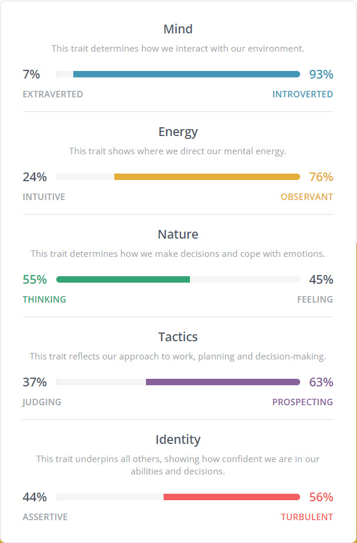

Some basic information about me,
I’m Australian, always lived in Melbourne or country Victoria, only speak English, though I have tried learning Russian, now it’s probably best that I didn’t. I’m the youngest of three, and will be turning 50 this year. I have three adult kids, but I am now divorced and live by myself which I prefer as you’ll see by my Myer-Briggs test.
I’ve previously studied a certificate 3 in IT in the 90’s, an advanced diploma in IT in the 00’s with a number of certifications attached. Recently I was certified in Prince 2 Foundation and Prince 2 Practitioner as I was looking to get into Project Management but due to the time length that I’ve been out of IT, I’ve decided to get a degree to further my employment opportunities.
I like to play single player strategy games.
When I was around about ten years old in the early 80’s my brother had a Dick Smith System 80 that was tape loaded. When he wasn’t home I’d move the computer to my room so I could play games, they were very basic back then but enjoyable. After awhile I started to learn to modify the code and even create my games, no books or internet then just looking at the code. I guess my main interest is in programming. I have worked in IT in the 00’s as a software/hardware technician.
I had two different universities offer me a Bachelors Degree in IT. The other university wanted me to start with two subjects from a business degree that were also included in the IT degree. RMIT went straight to IT subjects which is what I want to do. I lididn’t actually research which was the better university in regards to IT degrees, but so far I am enjoying the RMIT subjects.
What I’m expecting to learn in my studies at RMIT is plenty of programming and software skills. I’m still not sure what electives I will take as I’ll see how I go with each subject I do before it is time to select a elective and play to my strengths. One thing I’m hoping to not study is padding subjects like business studies.

Basically the job requires someone to support and development in their online education website, with proficiencies in Python and Django. It’s appealing to me as it is starts as part time, would allow me to grow my skills in Python and is close by to where I live.
The skills and qualifications required for this role is a post graduate degree most likely in IT or computer science, strong skills in Python, intermediate skills in Django and knowledge of HTML, CSS, Javascript, MySql, and Amazon web services.
I currently have basic skills in HTML, and I’m studying an introduction to Python module, the rest I would hope to learn in the course.
My plan to gain the required skills is doing this Bachelor of IT and in my downtime explore some free wiki’s of some of the other programming languages
ISTP-T
Your scores:
• Auditory: 35%
• Visual: 40%
• Tactile: 25%
You are a Visual learner!
If you are a visual learner, you learn by reading or seeing pictures. You understand and remember things by sight. You can picture what you are learning in your head, and you learn best by using methods that are primarily visual. You like to see what you are learning.
As a visual learner, you are usually neat and clean. You often close your eyes to visualize or remember something, and you will find something to watch if you become bored. You may have difficulty with spoken directions and may be easily distracted by sounds. You are attracted to colour and to spoken language (like stories) that is rich in imagery.
Here are some things that visual learners like you can do to learn better:
• Sit near the front of the classroom. (It won't mean you're the teacher's pet!)
• Have your eyesight checked on a regular basis.
• Use flashcards to learn new words.
• Try to visualize things that you hear or things that are read to you.
• Write down key words, ideas, or instructions.
• Draw pictures to help explain new concepts and then explain the pictures.
• Colour code things.
• Avoid distractions during study times.
Remember that you need to see things, not just hear things, to learn well.
Your score: 90%
Accuracy: 9/10
User average for this test is 71%.
You’re on your way, but we suggest you keep practising. Our premium dashboard allows you to keep track of your scores and compare against your peers.
These results are really no surprise, at my age I know my strengths and weaknesses, I know I’m analytical and introverted. With these results I probably wouldn’t want to be the team leader, but I’m happy to pick up the slack from other team members that aren’t pulling their weight for whatever reason. While being introverted I would still push for people to get the parts of the project done and help where help was needed. With regards to forming a team I think that I would be an important backbone of the team, who would thoroughly research problems and errors to get the best out of myself and the team.
The project that I would like to build is a review app for potential renters to find reviews on properties and landlords. This would allow users to search properties for rent in Australia and check reviews and also for renters to leave reviews on properties they have rented with a choice of one to five stars. It would also give landlords a right to reply to any reviews left for their properties.
My motivation from creating this app comes from my own experience with my landlord which has been less than great and they also own the apartment next to mine and over the years I have seen tenants cycle through the property, with one of them telling me the place is falling apart. I believe this would be a very useful app for renters as there is currently no other app like it available. It also has the potential to force bad landlords to change their ways and good landlords to receive the praise they deserve.
The app itself is very simple, it would start with a home screen getting the user to select between checking the reviews for a property, leaving a review for a property or replying to a review.
If the user selects to check the reviews for a property it would take them to a screen which would allow them to start entering a address, this address would be matched to an automatic database of addresses and the user could complete it by clicking on the correct address. The user is then prompted to continue and once clicked it would take them to a page for the reviews, if any. If there is a review the user can then see the star rating plus read the review for the property. If there is multiple reviews the page would then start with an average rating in stars for the property plus a list of the renter reviews for the property for the user to read, plus if there is a reply for any reviews these will also be shown.
If the user selects to leave a review for a property from the homepage, they are then taken to a page that asks them to start typing the address, as the user types the address suggestions are shown below the input box from a list of addresses from a database. Once the user selects the correct address, the user is prompted to continue to the next page. On the next page the user is first prompted to rate the property between 1 – 5 stars, then input their review for the property detailing their experience while living there. The user is again prompted to continue and the next page shows the rating and review and the user is asked to confirm. Once the user confirms the review is posted for that particular property.
If from the homepage the user clicks on reply to a review, the app will take them to the next page where they will be prompted to enter the address of the property, with suggestions for the address shown below input box from a database. Once the user selects the address that is listed in the database they are prompted to continue. The next page will show a list of reviews left for the property, if any, and the user can select a review, which will become highlighted, and the user is prompted to continue. The next page will show the star rating for the review that they have selected plus the review itself with a box below for the user to enter their reply. Once they have entered their reply the user is prompted to continue, on the next page the user is shown a snippet of the review they are replying to plus their full response and asked to confirm. Once confirmed the reply is posted to the database.
The app would be built using the MIT app inventor, cloud storage and a database of Australian addresses which are all available. As the app is very simple there would be no hardware requirements or other equipment needed. Going through the MIT app inventor it looks like it allows you to add databases, create input and output dialogue which is all the app needs.
The main skill required would be good knowledge of the MIT app inventor, there are tutorials on there for text to speech and translation between languages, this shows that the Inventor allows you to reference databases. There are readily available databases of Australian addresses both from the government and private industries. The other skill would be cloud based database knowledge, as the data will be stored on a cloud there will be a need for someone with cloud based skills to ensure the data is stored, formatted and retrieved correctly.Lastly someone who could research the legal requirements for such an app, this may require a signup/login page, which someone would need to intergrate into the homepage of the app.
If the project is successful it will allow renters to make an informed choice before renting a property. Any bad behaviour by landlords like refusing to fix issues, keeping all or part of the bond, excessive rental increases or lots of inspections can be left in the review section of the app for that particular address. It would also allow renters to see if a landlord is a good landlord. As there is currently no app available for renters to be able to do some research on the property they want to move into, yet they are asked for references and their finances. It will fill a big gap in the information flow and expose bad landlords. This would hopefully make bad landlords change how the treat their renters and provide a more positive experience for renters. It would also tell good landlords to keep on doing what they are doing.